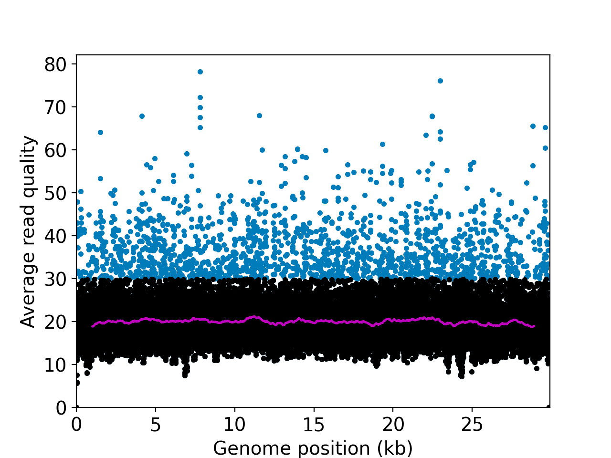
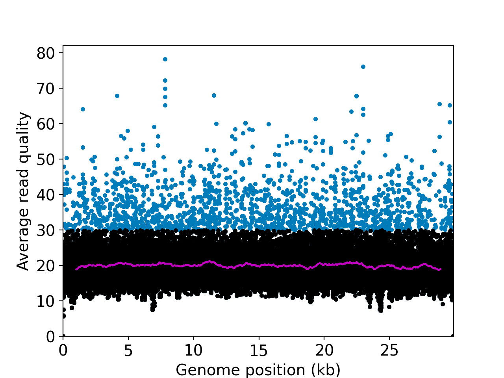
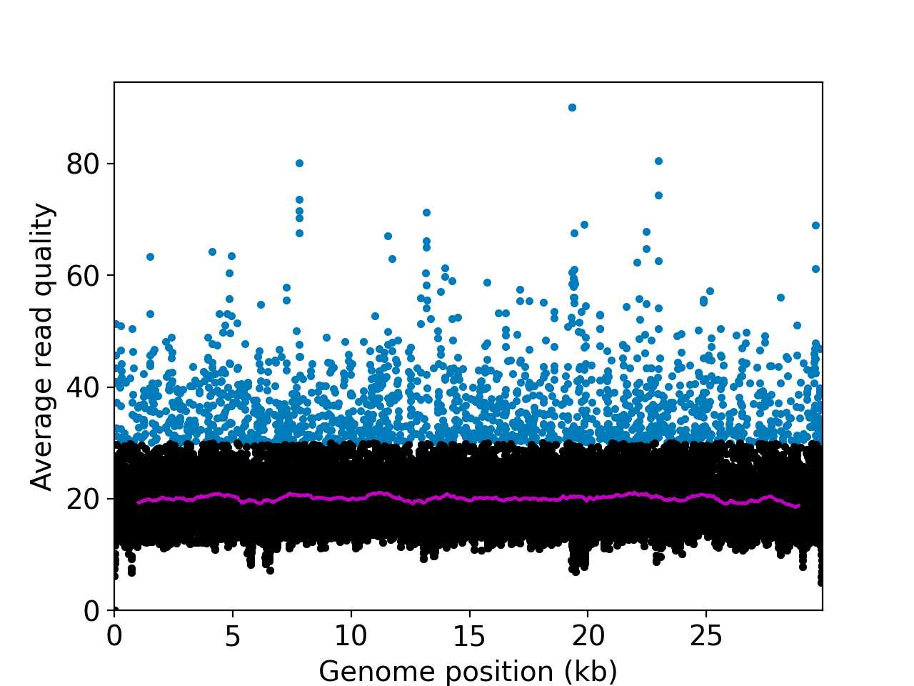
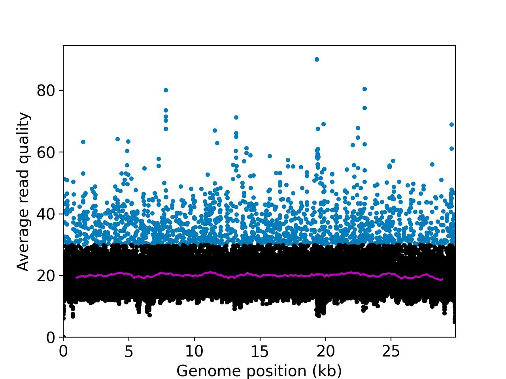

| Sample# | Sample name | Total #reads | Reads aligned PF* | Genomic coordinates 0X | Genomic coordinates <10X |
|---|---|---|---|---|---|
| 1 | SRR18910147 | 343476 | 196284 (57%) | 18nt (0%) | 554nt (1%) |
| 2 | SRR18910148 | 344810 | 199154 (57%) | 85nt (0%) | 1166nt (3%) |
| 3 | SRR18910149 | 321719 | 158671 (49%) | 82nt (0%) | 1776nt (5%) |
| 4 | SRR18910150 | 427492 | 234986 (54%) | 10nt (0%) | 1317nt (4%) |
| QC category | Subjective definition | Objective metrics |
|---|---|---|
| A | No QC issues evident | 0x coordinates <1% 10x coordinates <5% average coverage > 1000X average quality score >35 for Illumina, >15 if ONT, >70 if PacBio HiFi most abundant taxon is coronovirinae |
| B | Some QC issues, but accurate variant calling possible | 0x coordinates <20% 10X coordinates < 40% >80% of diverse SNPs covered average coverage > 100X average quality score >35 for Illumina >15 if ONT, >70 if PacBio HiFi |
| C | Some QC issues, and accurate variant calling impossible | 0x coordinates <99% 10X coordinates <95% |
| F | Significant QC/study design issues | Contamination (SNR<50) No/negligible coverage (< 1X) Biological/technical replicates' results are irreconcileable. |
| Sample Number | Suggested category | Suggested QC flags |
|---|---|---|
| 1 | A | None |
| 2 | A | None |
| 3 | A | None |
| 4 | A | None |
 

 
